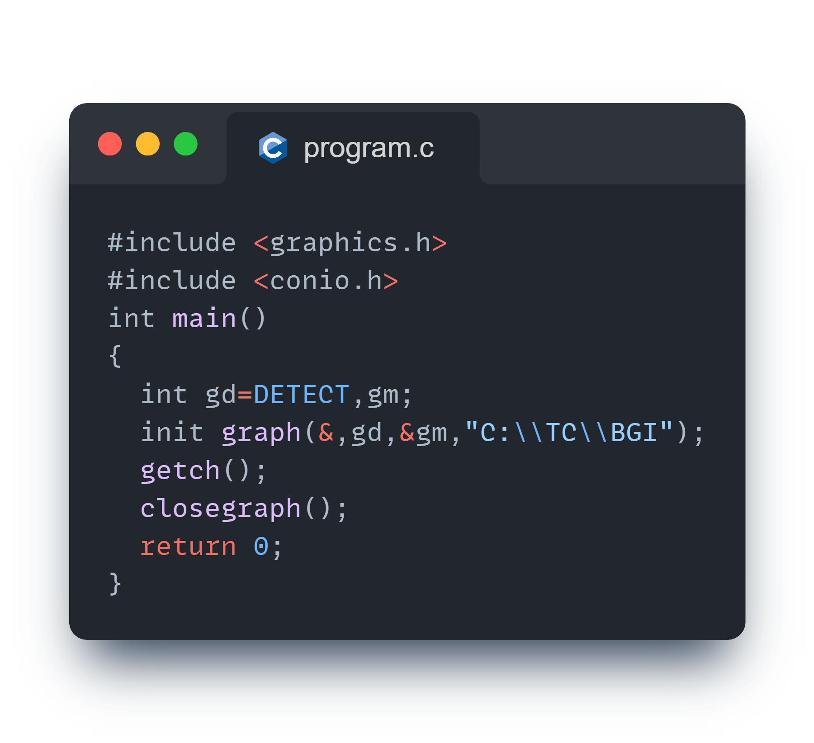

UNIT - I
Computer Graphics
Computer Graphics is an art/presentation on visual/relevant display unit of images,pictures , animations with the help of computer program.
gd : graphic driver
pixel : Picture Element ( It is the smallest unit of display )
PPI : Pixel per inch
Vector : Mathematical Formula
Raster : Pixel
There are two types of Computer Graphics
- Interactive CG (Ex: Computer Games)
- Non Interactive CG &40Ex: Movies)
Interactive CG: Interactive Computer Graphics that user can control the output with the help of input devices. ( 2 Ways )
Non-Interactive CG: Non Interactive CG that user cannot control the output with the help of input devices ( 1 Way Communication )
Advantages of interactive Computer Graphics-
- Representative uses
- Designing
- Presentation
- Simulation
- Entertainment
- Education
- Healthcare
- GUI
GUI
Most applications that run or present computer and work station and even those that run on terminals attached to time shared computers and network computer server have users interface they rely on desktop windows system to manage multiple simultaneous activities and on point and click facilities to allow users to select menu items, icons at objects on the screen typing is necessary only to input text to be stored and manipulated.
Example: Word processing, spreadsheet ( Excel ) and desktop publishing ( DTP )
Interactive Plotting
Used in business science technology!
Detailing
The next most common use of graphics is to create 2D and 3D graphics or mathematical, physical, economic functions, bar and pie chart, inventory and production chart, all these are used to present meaningful and concised data. The trends and patterns from the data so as to clarify complex phenomena and to facilitate and inform decision making.
CG
Most computer graphics can also be drawn but the computer can accomplish much more in a much short time. One of of the major benefits of computer graphics is that images can be manipulated relatively easy and that a multitude of visual effects are possible because the images can be played over and over again until the desired effect is achieved.

CRT (Cathode Ray Tube)
A cathode ray tube is a specialized vacuum tube in which images are reduced when an electron beam strikes phosphorescent screen.
All CRT's have 3 main elements:
- An electron run
- Deflection system
- Screen
- An Electron run: The electron run provides electron beam which is highly conservative stream of electronics.
- Deflection system: The Deflection system positions the electron beam on the screen and the screen displays a small spot of light at the point where the electron be strike in.
Output Device Development

Classification
- I/P
- Output
- Software